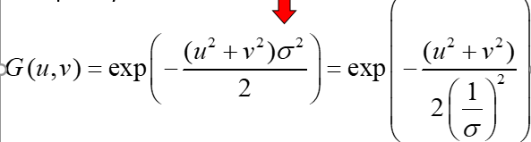
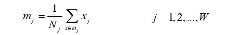

MIR 核磁共振成像 波段
相关计算
实验 FFT流程 (伪代码)
直方图
滤波去噪 (噪声与滤波器对应关系)
二维傅里叶变换 (步骤也有分)
lecture1-2
Lecture 1 - Introduction
A digital image is a representation of a two-dimensional image as a finite set of digital values, called picture elements or pixels.
$$
f:[a, b] \times[c, d] \rightarrow[0,255]
$$
Digital image processing focuses on two major tasks
- Improvement of pictorial information for human interpretation.
- Processing of image data for storage, transmission and representation for autonomous machine perception.
The continuum from image processing to computer vision can be broken up into low-, mid- and high-level processes
Two major factors for image creation
- Energy generator
- Energy receiver
Energy source include
Electromagnetic energy spectrum
- Gamma-Ray Imaging
- Used for nuclear medicine and astronomical observations
- X-Ray Imaging
- Used for medical diagnosis and also for industrial inspection
- The object is placed between a X-ray source and a film sensitive to X-ray energy
- The intensity of the X-rays is modified by absorption as they pass through the object
- Ultraviolet Imaging
- Used for lithography （平板印刷）, industrial inspection, microscopy, biological imaging, and astronomical observations
- Ultraviolet light is used in fluorescence microscopy（荧光显微镜）
- Visible and Infrared Bands Imaging
- Used in light microscopy, astronomy, remote sensing, industry, and law enforcement
- Imaging in the microwave band
- The dominant application of imaging in the microwave band is radar（雷达）; radar can get image regardless of weather or ambient lighting conditions. Radar waves can penetrate clouds, see through vegetation, ice, and dry sand.
- Imaging in the radio band
- Used in medicine and astronomy (consider gamma-rays)
- In medicine, radio waves are used in MRI（核磁共振成像）
- Gamma-Ray Imaging
Acoustic
Ultrasonic
Electronic
Lecture 2 - Digital Image Fundamentals
Structure of the human eye
Three membranes enclose the eye: the cornea and sclera（角膜和巩膜）, choroid（脉络膜）, and retina（视网膜）
When the eye is properly focused, light from an object outside the eye is imaged on the retina
Two kinds of light receptors distribute on the retina, cones and rods
Cones are primarily located in the central portion of the retina, called fovea and are sensitive to color; they function best in relatively bright light; so, cone vision is called bright-light vision
Rods are distributed over the retinal surface; rods serve to give a general overall picture of the field of view; they are not involved in color vision and are sensitive to low levels of illumination; rod vision is called dim-light vision
Around the region of the emergence of the optic nerve, there is no receptors and results in the so-called blind spot
Humans usually have three kinds of cones with different photopsins (光视蛋白), which have different spectral response curves; thus, we have trichromatic vision.
Image formation in the eye
- Muscles within the eye can be used to change the shape of the lens allowing us focus on objects that are near or far away
Perceived brightness is not a simple function of intensity
Visual system tends to undershoot or overshoot around the boundary of regions of different intensities, called as “Mach” bands（马赫带）
A region’s perceived brightness does not only depend simply on its intensity, but on its surrounding regions; such a phenomenon is called “simultaneous contrast”
Sampling and quantization will convert a continuous image signal f to a discrete digital form
- Digitizing the coordinate values is called sampling
- Digitizing the amplitude（振幅） is called quantization
Spatial resolution（空间分辨率）
- The spatial resolution of an image is determined by how sampling was carried out
- DPI (dots per inch) is used to measure the spatial resolution
Intensity resolution（灰度分辨率）
- Intensity resolution refers to the smallest discernible change in intensity level
- The more intensity levels used, the finer the level of detail discernible in an image
- The number of bits used to quantize intensity is often referred as the intensity resolution
Image interpolation
It is a basic tool used in tasks such as zooming, shrinking, rotating, and geometric corrections
Traditional methods include nearest neighbor, bilinear, and bicubic
nearest neighbor（最近邻内插）
bilinear（双线性内插）
-
$v(x,y)=ax+by+cxy+d$, 4 neighbors of p
bicubic（双三次内插）
$v(x, y)=\sum_{i=0}^{3} \sum_{j=0}^{3} a_{i j} x^{i} y^{j}$
lecture3
图像增强
直方图处理
空间滤波
平滑滤波
锐化滤波
Intensity Transformation
image negatives
- 增强黑色背景中白色或白色的细节
- S = L-1-r
thresholding
- 二值化，用于分割图像
log transformation
- $s = c*log(1+r)$ c是常数
- 压缩高值像素，扩展低值像素
power law transformation（gamma
- $s = cr^y$ c和y为正常数
- y大于1时对高像素进行拉伸
- y小于1时对低像素进行拉伸
对比度拉伸函数
- $s = 1/(1+(m/r)^E)$
Piece-wise Linear Transformation
分段线性
- 对比度拉伸
- intensity level slicing
- bit-plane slicing
- 每个像素值8个比特位，高序比特位的值通常包含了最重要的信息
Histogram processing
PDF概率密度函数 和CDF累积分布函数
期望
- $E(X) = $
方差
高斯分布的密度函数积分为1
协方差：

histogram equalization
- 对比度增强
- histogram 是对于PDF的近似
- 让每个像素值的概率为$1/(L-1)$
- 离散情况和连续情况？
Spatial Filter
相关correlation
卷积和相关是具有对称性的，卷积要先对称一下
数学上证明卷积比相关有更好的性质
convolution
性质：
- 第三个怎么证明？？
Smoothing Spatial filters
低通滤波
高斯滤波
- 长得像高斯函数一样的卷积核，和周围像素的平均，移除了高频部分
中值滤波
- 椒盐噪声
- 适用于在一定范围内有少量偏大或偏小的值
Sharpening Spatial Filters
- 增强边缘，移除模糊
拉普拉斯算子
- 就是计算图像一个点的二阶导数，若有值则是边缘
- 旋转不变性的证明？？
lecture4
对周期性的函数f(t)如何提取出其中的特定频率下的函数
傅里叶series 到傅里叶变换
所有的周期函数都可表示为：
及其证明
非周期的函数（也可用于周期函数）：
用复数形式将周期性的series进行推导得到
当T趋于无穷的时候，可推导为非周期函数
- 其中s为角频率
傅里叶变换的自变量s，代表啥？，在不同频率下的什么值？
傅里叶变换的性质
- 冲激函数
- 当方差0的正态分布函数
- 冲击函数的傅里叶变换为1
- 1的傅里叶变换为:
- 冲击串的傅里叶变换还是冲击串
一些函数的傅里叶变换
傅里叶变换的应用
卷积定理
- 证明
高斯滤波
空域：
频域下;
$G(u,v) = e^{-2π^2σ^2(u^2+v^2)}$
离散傅里叶变换DFT
形式：
FFT 快速傅里叶变换
二维形式：
连续的
- u,v 分别为x,y 方向上的频率
离散的
u,v 分别代表
u/M代表频率，1/M相当于单位，因为它是离散的
性质
- 周期性二维傅里叶变换在其变换和反变换在u和v方向上都是无限周期的
- 平移：乘以一个指数项进行左右移动：
- 当 u0 = M/2时，
- 旋转：
- 证明？
频域上的图像平滑锐化基本滤波
谱对图像的平移是不敏感的，它随旋转图像以相同的角度旋转
为什么高频部分在四周？
- 噪声和边缘都属于高频成分在傅里叶变换中
Smoothing
Directly Filtering in the Frequency Domain
Convolution via Fourier Transform
1的是白色，通过的部分
理想低通滤波
- 其中$D(u,v) = {[u^2+v^2]}^{1/2}$半径越小越模糊，D(u,v) is the distance of (u, v) to the frequency centre (0,0)
Butterworth Low-pass filter
- n越大，越趋近于理想的滤波器,也就是越模糊（半径不变时
Gaussian Low-pass
Sharpening
就是高通滤波：即1-低通滤波
lecture 5
Image Restoration
Nosie Model
表示：
类别：高斯噪声，瑞丽噪声，伽马噪声，指数噪声，均匀噪声，脉冲噪声

周期性噪声：

- 证明？
Additive Random Noise Reduction
算数Arithmetic均值滤波
适合高斯噪声和均匀噪声
会导致模糊
几何Geometric均值滤波
- 相比于算数均值，保留了一些细节
谐波Harmonic均值滤波
- 适用于盐粒噪声，擅长处理高斯噪声类型的噪声
逆谐波均值滤波
Q=0 算数
Q = -1 谐波，会使暗区加强
Q>0 适合胡椒噪声，正谐波会使暗区淡化和模糊
统计排序滤波器
- 包括：中值，最大最小值，中点，修正的alpha中值滤波
Alpha-Trimmed Mean Filter
- 去掉d/2的最高和最低灰度值，再取中值
- 适用情况：包括了多种噪声
Adaptive Filter
- 自适应中值滤波
- 作用：移除脉冲噪声，平滑其他噪声，移除失真或断裂的现象
- 当脉冲噪声很密集的时候 ，中值滤波效果不佳，因为有可能你取到的中值也是噪声
- 其关键就是改变核大小，当渠道的中值还是噪声时，扩大kernel_size,再取中值
- kernel_size 有个最大限制
Periodic Noise Reduction
带阻滤波
- 就是可以移除移动频率范围内的
限通滤波
- 应用场景？
步骤
低频与高频，图像与谱如何对应
lecture 6
Isolated point detection
- laplacian 算子
- 对噪声敏感
Edge detection
边缘类型
- Depth discontinutity:
- Surface orientatation discontinutity: block edge
- reflectance discontinutity: texture or changes
- illuminaiton discontinutity：like shadow
基本步骤：
- reduce noise
- detect edge point
- edge localization
梯度方向与边缘垂直
SOBEL 算子
Prewitt 算子
Marr-Hildreth Edge Detector
- 基本思想：寻找0交叉
- 步骤：高斯过滤噪声，拉普拉斯算子计算二阶梯度，找到0交叉点；步骤1和2可以合并为LoG
高斯拉普拉斯算子LOG：)可以先被计算出来
- 为什么要用DOG做近似
找到0边缘
- 至少要有两个相对的领域像素的符号不同:左右，上下，两对角
Canny Edge Detection
- 步骤
- 平滑，高斯滤波
- 计算gradient magnitude 和 angle map
- 细化由一阶梯度产生的边缘，用非极大值抑制
- 找到与$α(x,y)$最接近的方向（水平 垂直 ±45度等）
- 若$M(x,y)$的值大于沿梯度方向的两个邻居的值，则不一致
- 否则，将赋为0，即抑制
- 对抑制过后的进行阈值处理，以减少为边缘点,再进行连接操作
- 强边缘：大于$T^H$
- 弱边缘：$[T^L,T^H]$
- 优缺点：表现比前面几种算法都好
- 低错误率，检测到的边缘点都尽可能的是真实的
- 谷歌
Segementation based on thresholding
可化为聚类问题
Basic global thresholding
其实跟k聚类相似
Otsu’s optimum global thresholding
- 基本思想：寻找合适的像素值阈值k，来使得方差最大化
Variable thresholding
为什么要用：有些情况图像中有噪声和非均匀分布的光照（illumination），全局阈值不太好
每个像素的阈值都不同，通过来计算（$σ{xy}，m{xy}$,分别为标准差和邻居均值）
moving average
- 适用于文档处理，当感兴趣的物体与图像的尺寸相比较小（细）时，效果较好，因为针对黑白手写文本，一行中较细的话那个位置的点（周围有污染）均值较小，被污染的位置均值较大，
Analytic element detection by Hough transform
修改后的霍夫变换：
曲线检测
- 用的是更高纬的投票空间
- 方法和线检测类似
优缺点
优点：
- 可以处理遮挡
- 可以检测出多个实例？
- 对噪声有较好的适用性
缺点：
- 计算时间复杂度：随着曲线的参数增加而指数上升
- 投票网格大小不好确定
- 非目标形状会在参数空间产生虚假峰
- 且在检测过程中只能确定直线方向，丢失了线段的长度信息
如何连接直线？
lecture 7
模式和模式类
- 三种模式组合：向量，串和树
RecognitionBased On Decision-Theoretic Methods
匹配
- 最小距离分类器
- 当均值间的距离与每个类的分散度或随机性相比较大时
- 个类别的模式向量：
- 使用欧氏距离来衡量：
- 等价于取最大值
- 决策边界是：连接两个模式向量（点）线段的垂直等分线,怎么证明垂直？

- $d_{ij}(x)$的符号能够确定该模式的归属
- 如何对应起来的？
相关
- f为图像 w为模板
- 是f与w重合区域的平均值，w是模板的平均值
- 值域-1,1
最佳统计 分类器（贝叶斯分类器）
如何证明？
- 决策函数其实就是：$d_j(x)= p(x|w_j)*p(w_j)$
- $p(w_j)$ 为先验概率 $p(x|w_j)$为wj类中模式向量x的概率密度值（由概率密度函数获得），然而这个密度函数不好获得，需要进行估计
- 高斯模式类的贝叶斯分类器p567
- 贝叶斯分类器的训练，样本用来估计均值向量和协方差矩阵
- $d_j(x) = ln(P(w_j)) + x^TC^{-1}mj - 1/2m^T_jC^{-1}m^j$